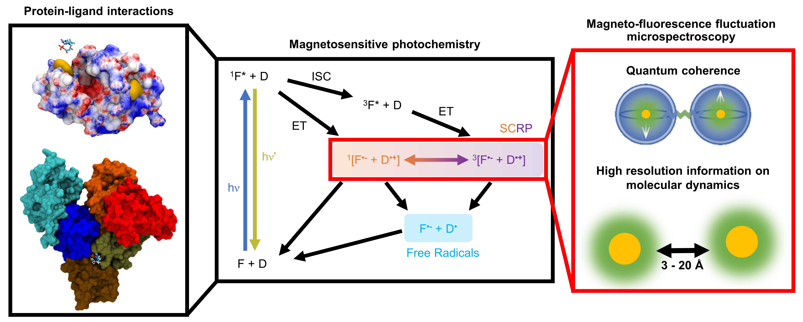

FEATURED / 01
Single-photon quantum spin effects in biomolecules
Published in Nature Photonics! The effects of magnetic fields on quantum entangled biomolecules are detected using a highly sensitive magneto-fluorescence fluctuation microspectroscopy technique. This marks an important advance in experimental quantum life sciences at the single-photon level.